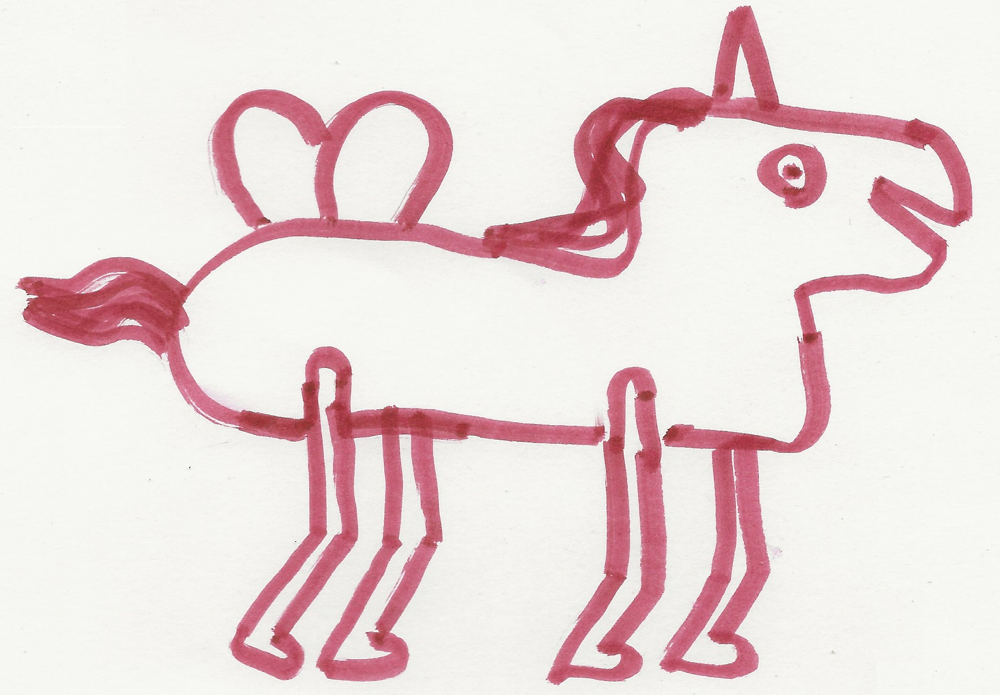

$$\newcommand{\n}{\hat{n}}\newcommand{\w}{\hat{\omega}}\newcommand{\wi}{\w_\mathrm{i}}\newcommand{\wo}{\w_\mathrm{o}}\newcommand{\wh}{\w_\mathrm{h}}\newcommand{\Li}{L_\mathrm{i}}\newcommand{\Lo}{L_\mathrm{o}}\newcommand{\Le}{L_\mathrm{e}}\newcommand{\Lr}{L_\mathrm{r}}\newcommand{\Lt}{L_\mathrm{t}}\newcommand{\O}{\mathrm{O}}\newcommand{\degrees}{{^{\large\circ}}}\newcommand{\T}{\mathsf{T}}\newcommand{\mathset}[1]{\mathbb{#1}}\newcommand{\Real}{\mathset{R}}\newcommand{\Integer}{\mathset{Z}}\newcommand{\Boolean}{\mathset{B}}\newcommand{\Complex}{\mathset{C}}\newcommand{\un}[1]{\,\mathrm{#1}}$$
Contents
Rita #2
Rita #2

Pegasus
Datumet är från när teckningen scannades, den ritades lite tidgare.